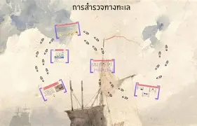

การสำรวจทะเล กระบวนการศึกษาและค้นคว้าทะเลและมหาสมุทร โดยใช้เทคโนโลยีต่างๆ เช่น เรือดำน้ำ, หุ่นยนต์ใต้น้ำ, และโดรนใต้น้ำ เพื่อค้นหาข้อมูลเกี่ยวกับสิ่งมีชีวิตใต้ทะเล, ทรัพยากรธรรมชาติ, สภาพภูมิประเทศ, รวมถึงการศึกษาเกี่ยวกับการเปลี่ยนแปลงสภาพภูมิอากาศและผลกระจากมลพิษทางทะเล การสำรวจทะเลมีบทบาทสำคัญในการอนุรักษ์ทะเลและพัฒนาความรู้ทางวิทยาศาสตร์เกี่ยวกับโลกใต้ทะเล.
